ВХ
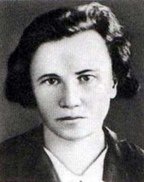
Вера Хоружая
Подпольщица, писательница
Возглавляла подполье в Витебске, передавала разведданные партизанам. Герой Советского Союза (посмертно).
Конкурсный интерактивный ИТ-проект · 2026
Интерактивный проект о сохранении исторической памяти о событиях Великой Отечественной войны, героическом прошлом белорусского народа и диалоге поколений.
Листайте внизО проекте
Великая Отечественная война стала самой трагической страницей истории Беларуси. Каждый третий житель республики погиб: в боях, под оккупацией, в лагерях смерти, в сожжённых вместе с людьми деревнях. Память об этом — не просто даты в учебнике. Это судьбы конкретных людей: наших прадедов и прабабушек.
Наш проект — это мост между поколениями. Мы рассказываем о войне языком цифр и фактов, знакомим с героями и мемориалами, предлагаем пройти викторину, зажечь виртуальную свечу и сохранить историю своего родственника. Пока мы помним и передаём память дальше — связь поколений не прерывается.
«Помните!Роберт Рождественский, «Реквием»
Через века, через года —
помните!
О тех, кто уже не придёт
никогда, — помните!»
Хроника
Первой на пути врага на белорусской земле встала Брестская крепость. Гарнизон принял бой в первые минуты войны и сражался почти месяц в полном окружении.
Защитники Восточного форта во главе с майором Петром Гавриловым держались до конца июля. Крепость стала символом несокрушимого мужества.
Беларусь — «республика-партизанка». Действовали более 1100 отрядов и групп, 374 тысячи партизан и подпольщиков вели борьбу в тылу врага.
Каратели сожгли деревню Хатынь вместе со 149 жителями, среди которых 75 детей. Хатынь стала символом всех 5295 белорусских деревень, уничтоженных вместе с людьми.
Мощное наступление Красной армии, названное в честь русского полководца, началось с освобождения Беларуси и стало одной из крупнейших военных операций в истории.
Столица Беларуси освобождена от оккупантов. С 1996 года эта дата отмечается как День Независимости Республики Беларусь.
Территория Беларуси полностью освобождена от немецко-фашистских захватчиков.
Война, унёсшая жизни каждого третьего жителя Беларуси, завершилась Великой Победой. Цену этой Победы мы помним и сегодня.
Герои
2026 год в Беларуси объявлен Годом женщины. Среди героев этой подборки — 10 женщин, приближавших Победу.

Подпольщица, писательница
Возглавляла подполье в Витебске, передавала разведданные партизанам. Герой Советского Союза (посмертно).
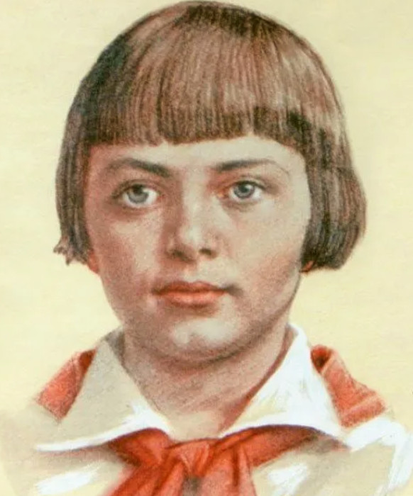
Юная подпольщица
Участвовала в подполье в Витебской области: распространяла листовки, устраивала диверсии. Замучена фашистами. Герой Советского Союза (посмертно).
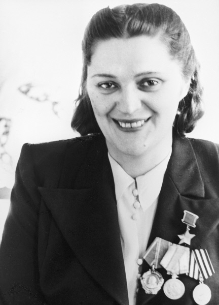
Минская подпольщица
Сотрудница штабной столовой ликвидировала гауляйтера Беларуси Вильгельма Кубе. Герой Советского Союза (1943).
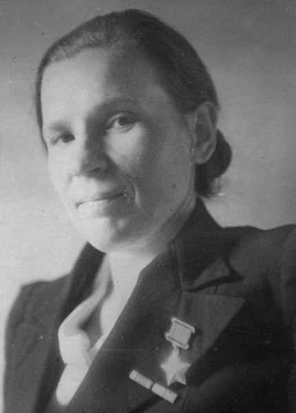
Подпольщица
Передала Елене Мазаник мину, уничтожившую гауляйтера Вильгельма Кубе. Герой Советского Союза (1943).
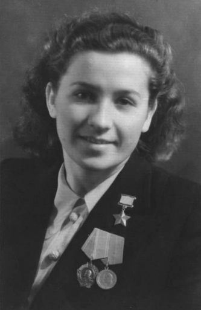
Разведчица, врач
Участвовала в подготовке покушения на гауляйтера Кубе. После войны стала врачом. Герой Советского Союза (1943).
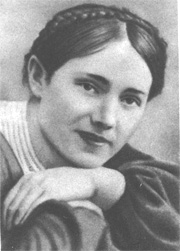
Партизанка-разведчица
Учительница, связная бригады «Неуловимые». Арестована по доносу, замучена фашистами. Герой Советского Союза (посмертно).
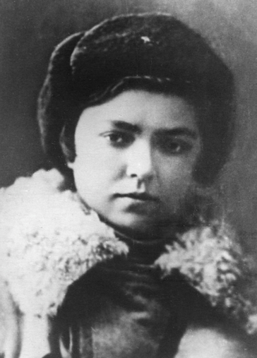
Партизанка-диверсантка
Командир женской диверсионной группы в тылу врага на Витебщине. Погибла в бою. Герой Советского Союза (посмертно).
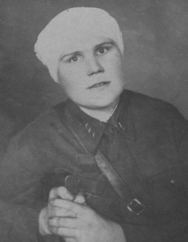
Санинструктор
Вынесла с поля боя 123 раненых. Потеряв руки и ноги, осталась символом мужества. Герой Советского Союза.
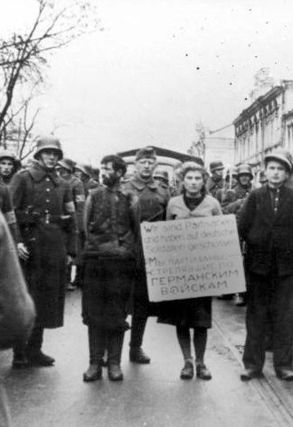
Минская подпольщица
Укрывала раненых красноармейцев. Казнена фашистами в Минске вместе с сыном Володей. Фото «мать перед казнью» обошло весь мир.
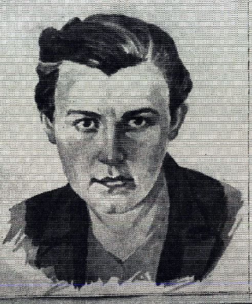
Партизанка-разведчица
Первая и единственная женщина, закрывшая собой амбразуру вражеского дзота. Герой Советского Союза (посмертно).
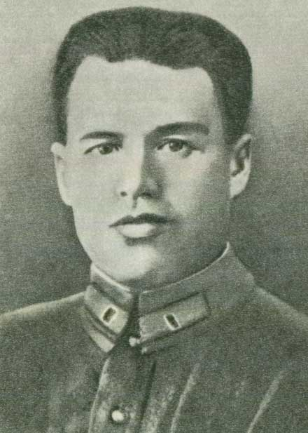
Майор, Герой Советского Союза
Руководил обороной Восточного форта Брестской крепости. Попал в плен лишь в конце июля 1941 года, будучи тяжело раненым.
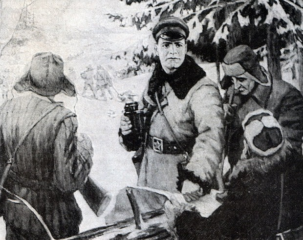
Командир партизанской бригады
Организовал подполье в Орше, громил вражеские гарнизоны. Герой Советского Союза (посмертно).
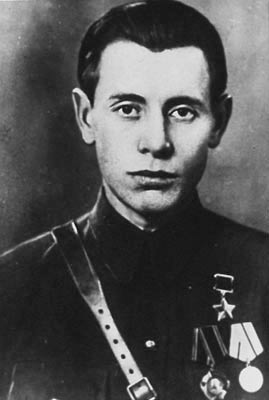
Руководитель партизанского движения
Командовал партизанской бригадой в Витебской области. Герой Советского Союза, позже возглавлял БССР.
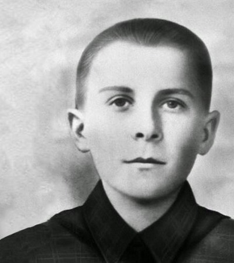
Юный партизан-разведчик
Пионер из деревни Станьково Дзержинского района. Погиб в бою в 14 лет, взорвав себя гранатой. Герой Советского Союза (посмертно).
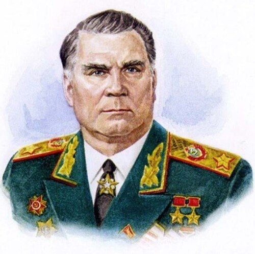
Дважды Герой Советского Союза, Маршал
Уроженец Беларуси. Отличился при освобождении республики и в Берлинской операции. Участвовал в Параде Победы 1945 года.
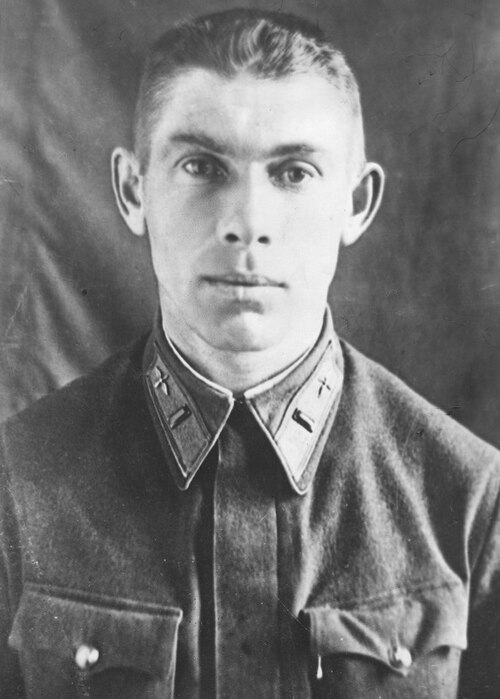
Лётчик, Герой Советского Союза
Направил горящий самолёт на колонну врага — «огненный таран» совершён над белорусской землёй под Радошковичами.
Места памяти
Нажмите на карточку, чтобы раскрыть историю мемориала. Клик по фотографии — рассмотреть её крупнее.
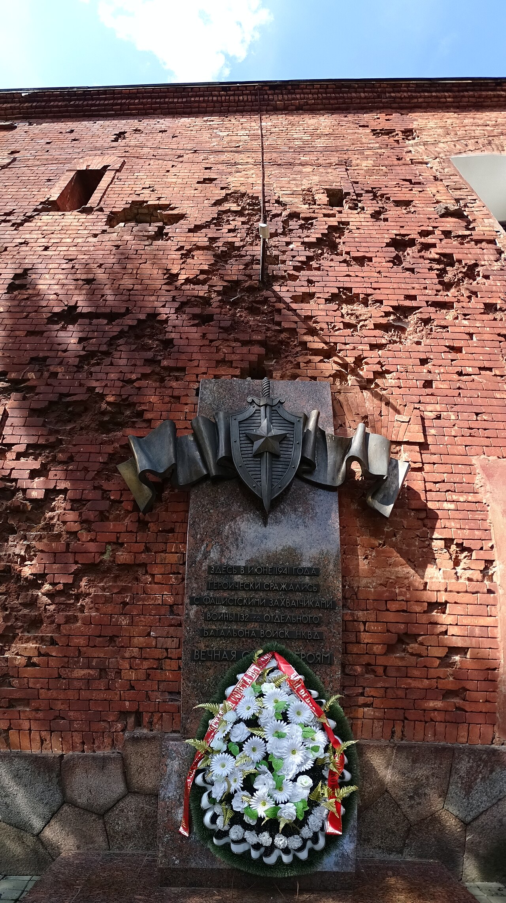
Мемориал в память о защитниках крепости, принявших первый удар войны. По решению 1965 года крепости присвоено звание «Крепость-герой».
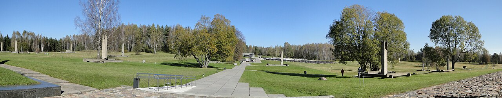
Символ всех белорусских деревень, уничтоженных вместе с жителями. Колокола Хатыни звонят каждые 30 секунд.
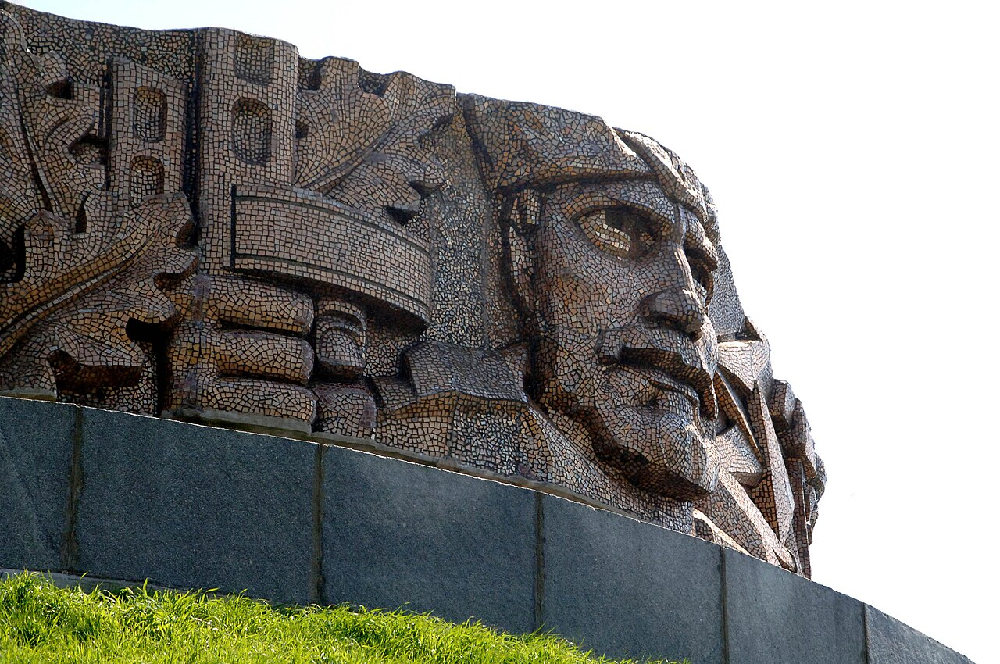
Возведён в честь воинов Красной армии, освобождавших Беларусь. Землю для кургана привозили со всех уголков СССР.
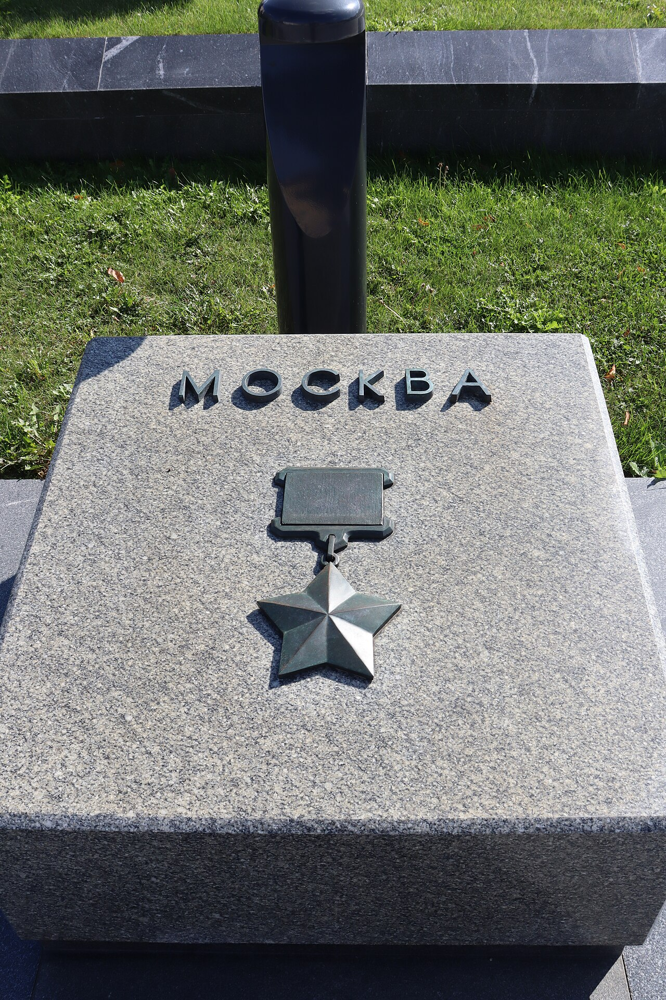
Обелиск на площади Победы в Минске. У его подножия с 1961 года горит Вечный огонь в память о павших.
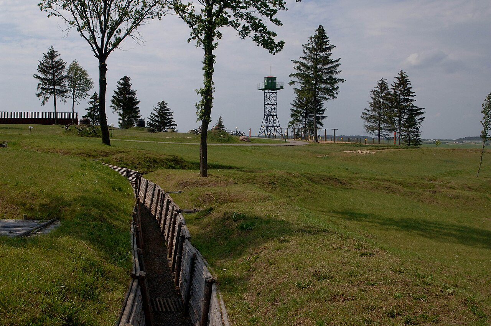
Историко-культурный комплекс на месте Минского укрепрайона 1930-х годов. Доты, техника и окопы — живой музей войны под открытым небом.
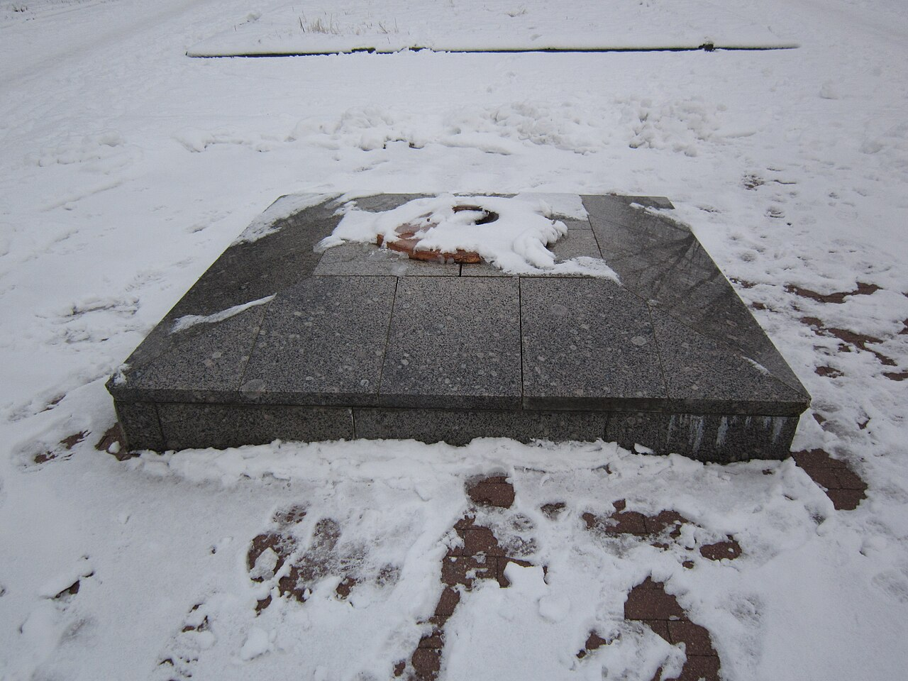
Крупнейший лагерь смерти на территории Беларуси: здесь погибли более 200 тысяч человек. Мемориал открыт к 70-летию Победы.
Свеча памяти
Нажмите на свечу, чтобы зажечь её в память о героях.
Всего зажжено: 0 свечей
Диалог поколений
Молодёжь поднимает останки бойцов в местах боёв, устанавливает имена по солдатским медальонам, возвращает забытых героев семьям.
Уход за памятниками и братскими могилами, помощь ветеранам, акции «Беларусь помнит» и «Бессмертный полк» — тысячи юных добровольцев.
Школьные музеи, оцифровка документов и фотографий, интернет-базы «Память народа» и «Партизаны Беларуси» делают историю доступной каждому.
Уроки мужества, воспоминания очевидцев, семейные реликвии и письма с фронта — нить памяти, протянутая от прадедов к правнукам.
Бессмертный полк
Расскажите о своём родственнике — участнике Великой Отечественной войны, партизане, труженике тыла или узнике концлагеря. После проверки модератором ветеран навсегда попадёт в общий полк.
Викторина